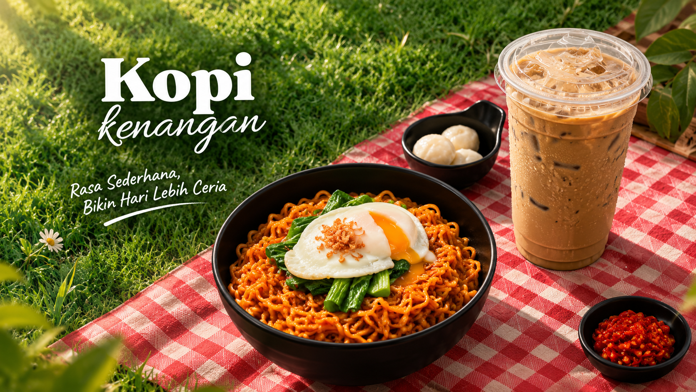

Kopi Gula Aren
Aroma karamel yang lebih kompleks dan alami dibanding penggunaan gula putih biasa.
Rp16.000
UMKM Pekalongan
Kopi lokal pilihan untuk teman belajar, bekerja, dan berdiskusi.

Aroma karamel yang lebih kompleks dan alami dibanding penggunaan gula putih biasa.
Rp16.000
Roti bakar dengan perpaduan keju dan cokelat yang manis, gurih, dan lumer di setiap gigitan.
Rp10.000
Hidangan mi berkuah dengan cita rasa gurih, pedas, dan kaya rempah yang menggugah selera.
Rp13.000
Kopi Kenangan, Jl. Cendrawasih No. 93, Pekalongan, Jawa Tengah.
Jam layanan: Senin–Minggu, pukul 09.00–21.00 WIB.